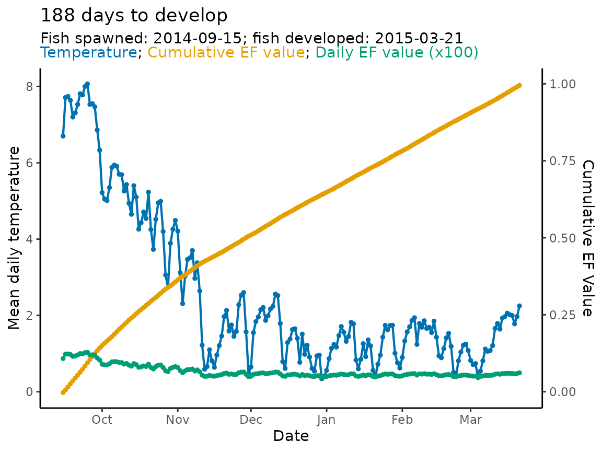

Predict spawning
Morgan Sparks, Bryan M. Maitland
Source:vignettes/Predict_spawning.Rmd
Predict_spawning.RmdIntroduction
hatchR has a built in
function—predict_spawn()—which allows users to predict when
a fish’s parent spawned based on the observation of either when a fish
hatched or emerged. The function works almost exactly the same as
predict_phenology() but walks backwards from the point of
development (hatch or emerge) and outputs spawn date.
Workflow
predict_spawn() works in essentially the same fashion as
you learned about for predict_phenology() in the Predict
fish phenology: basic vignette. First you have to select a
developmental model. This will be determined by what life history stage
from which you have empirical phenology data. For example, maybe you
snorkeled a stream and observed bull trout emerging from a redd.
Model selection
Because our empirical data are from observing juvenile bull trout
emergence we will use the bull trout emergence model using
model_select() and our model_table. However,
if you have custom models those could be used in the same fashion.
#select bull trout emergence model
bt_emerge_mod <- model_select(author = "Austin et al. 2019",
species = "bull trout",
model = "MM",
development_type = "emerge"
)Predict spawning
We’ll use our crooked_river data set, which is
temperature data from a reach of spawning bull trout. With model in hand
we’ll predict spawn timing assuming we observed fish emerging March 21,
2015.
#predict spawn timing using "2015-03-21" emergence date
bt_spawn <- predict_spawn(data = crooked_river,
dates = date,
temperature = temp_c,
develop.date = "2015-03-21",
model = bt_emerge_mod
)The outputted object has the exact same structure as a
predict_phenology() output. They include the slots:
days_to_develop: days from hatch or emergence to spawndev_period: a 1x2 dataframe wherestart= predicted spawn time andstop=empirical developmental event used for prediction in the model.-
ef_table: a n x 5 tibble where n is the number of days from spawn to development. Note that the table is ordered from the development date and moves backwards in time. The columns are:index: the row number in the temperature data setdates: dates imported from your temperature datatemperature: daily average temperature imported from your temperature dataef_vals: every day’s individual effective valueef_cumsum: the cumulative sum of effective values moving backwards from 1, a fish hatches whenef_cumsum<= 0.
model_specs: model specifications imported from the developmental model provided topredict_phenology()
A summary of the above output for bt_spawn is presented
below.
str(bt_spawn)
#> List of 4
#> $ days_to_develop: int 188
#> $ dev_period :'data.frame': 1 obs. of 2 variables:
#> ..$ start: POSIXct[1:1], format: "2014-09-15"
#> ..$ stop : POSIXct[1:1], format: "2015-03-21"
#> $ ef_table : tibble [188 × 5] (S3: tbl_df/tbl/data.frame)
#> ..$ index : num [1:188] 1572 1571 1570 1569 1568 ...
#> ..$ dates : POSIXct[1:188], format: "2015-03-21" "2015-03-20" ...
#> ..$ temperature: num [1:188] 2.25 1.97 1.78 2 2.02 2.06 1.97 1.93 1.64 1.79 ...
#> ..$ ef_vals : num [1:188] 0.00496 0.00479 0.00467 0.00481 0.00482 ...
#> ..$ ef_cumsum : num [1:188] 0.995 0.99 0.986 0.981 0.976 ...
#> $ model_specs : spc_tbl_ [1 × 5] (S3: spec_tbl_df/tbl_df/tbl/data.frame)
#> ..$ author : chr "Austin et al. 2019"
#> ..$ species : chr "bull trout"
#> ..$ model_id : chr "MM"
#> ..$ development_type: chr "emerge"
#> ..$ expression : chr "1/exp(5.590 - (x * 0.126))"
#> ..- attr(*, "spec")=List of 3
#> .. ..$ cols :List of 5
#> .. .. ..$ author : list()
#> .. .. .. ..- attr(*, "class")= chr [1:2] "collector_character" "collector"
#> .. .. ..$ species : list()
#> .. .. .. ..- attr(*, "class")= chr [1:2] "collector_character" "collector"
#> .. .. ..$ model_id : list()
#> .. .. .. ..- attr(*, "class")= chr [1:2] "collector_character" "collector"
#> .. .. ..$ development_type: list()
#> .. .. .. ..- attr(*, "class")= chr [1:2] "collector_character" "collector"
#> .. .. ..$ expression : list()
#> .. .. .. ..- attr(*, "class")= chr [1:2] "collector_character" "collector"
#> .. ..$ default: list()
#> .. .. ..- attr(*, "class")= chr [1:2] "collector_guess" "collector"
#> .. ..$ delim : chr ","
#> .. ..- attr(*, "class")= chr "col_spec"
#> ..- attr(*, "problems")=<externalptr>So we see, the fish took 188 days to emerge with a predicted spawning date of September 15, 2014.
# development time
bt_spawn$days_to_develop
#> [1] 188
# spawning date
bt_spawn$dev_period$start
#> [1] "2014-09-15 UTC"Finally, because the model output is in essentially the same format
as that from predict_phenology() it can be plotted using
plot_phenology() .
plot_phenology(bt_spawn)
Compare to predict_phenology()
To demonstrate this provides the same information as
predict_phenology() we can compare the outputs. Now we will
use the predicted spawn date of "2014-09-15" as our input
in predict_phenology().
bt_emerge <- predict_phenology(data = crooked_river,
dates = date,
temperature = temp_c,
spawn.date = "2014-09-15",
model = bt_emerge_mod
)And we can compare dev_period to verify the outputs
match.
# are they the same (yes!)
bt_emerge$dev_period == bt_spawn$dev_period
#> start stop
#> [1,] TRUE TRUE
#print out values
bt_emerge$dev_period; bt_spawn$dev_period
#> start stop
#> 1 2014-09-15 2015-03-21
#> start stop
#> 1 2014-09-15 2015-03-21Using multiple inputs for predict_spawn()
Like predict_phenology(), predict_spawn()
can easily be mapped across multiple variable sets to automate the
function. We can use a simple example of observing emerging fish across
multiple months to demonstrate.
We’ll assume we observed fish emerging February 15, March 15, and
April 15 in 2015. And then map() the function across those
dates using the purrr package.
library(purrr)
#vector of dates
emerge_days <- c("2015-02-15","2015-03-15", "2015-04-15")
# object for predicting spawn timing across three emergence days
bt_multiple_emerge <- map(emerge_days, # vector of emergence dates
predict_spawn, # predict_spawn function
# everything below are arguments to predict_spawn()
data = crooked_river,
dates = date,
temperature = temp_c,
model = bt_emerge_mod)
# we can access just the dev_periods using map_df
# the start column provides the predicted spawn dates
bt_multiple_emerge |>
map_df("dev_period")
#> start stop
#> 1 2014-08-29 2015-02-15
#> 2 2014-09-11 2015-03-15
#> 3 2014-09-27 2015-04-15Based on our predictions, the fish spawned for our respective observed emergence dates on August 29, September 11, and September 27 in 2014.
predict_spawn() can be automated to greater extents just
like with predict_phenology(). We recommend reading the Predict
fish phenology: advanced vignette to review ways to map across
multiple variables.